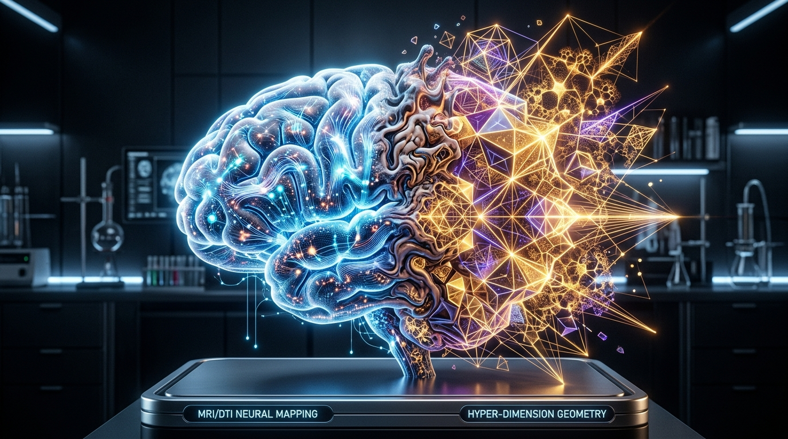
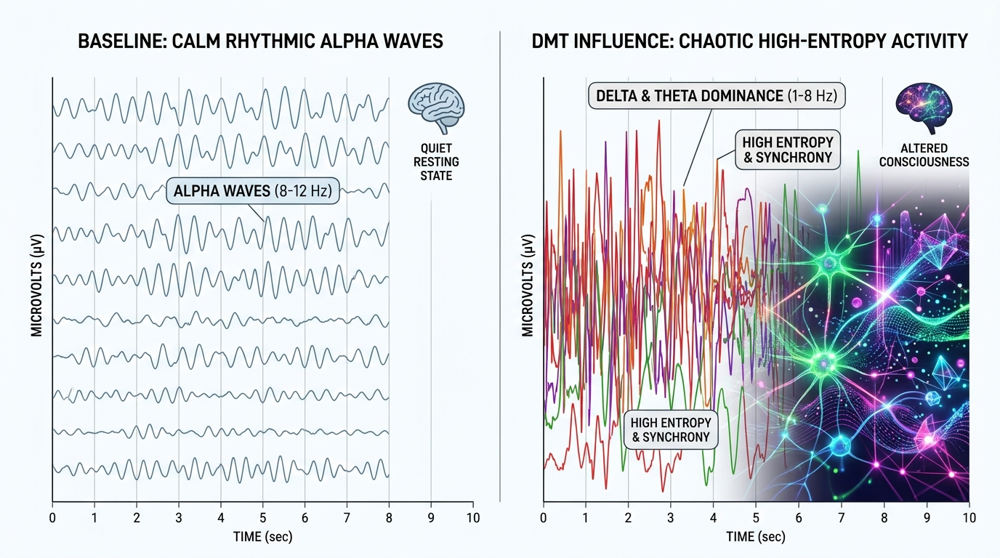
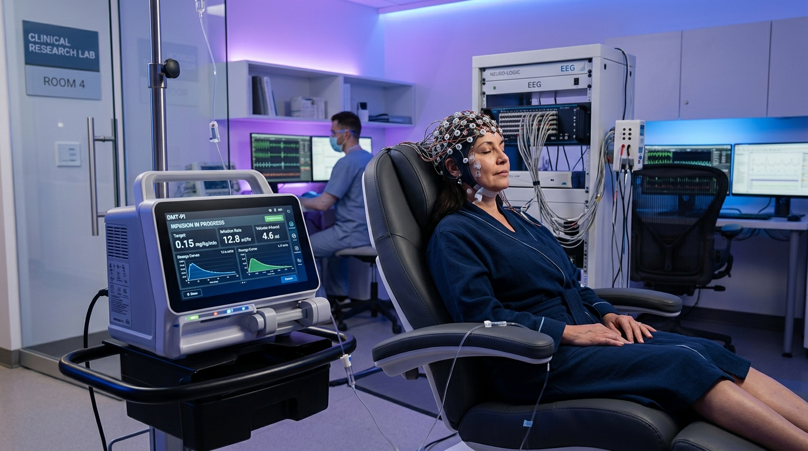

Explore the neuroscience and clinical future of DMT. Discover fMRI brain mapping, participant-reported entity encounters, and Extended-State DMT (DMT-PI).
N,N-Dimethyltryptamine (DMT) is a naturally occurring, highly potent tryptamine alkaloid that stands as one of the most enigmatic compounds in psychopharmacology. Classified as a classic psychedelic alongside psilocybin and LSD, DMT produces an exceptionally rapid, visually intense, and ontologically disruptive altered state of consciousness.
Historically utilized for centuries in South American shamanic rituals as the psychoactive engine of the brew ayahuasca, modern clinical research has shifted toward investigating isolated, vaporized, or intravenously administered DMT.
This scientific pivot has revealed a highly consistent, structured, and biologically complex phenomenon that challenges our traditional understanding of brain function and subjective reality. By integrating cutting-edge functional neuroimaging, electrophysiological data, and rigorous phenomenological mapping, researchers are beginning to decode the mechanics of the DMT state. This report explores the neurochemical pathways, the dramatic neural reconfigurations under its influence, the chronological phases of the subjective experience, the mysterious consistency of entity encounters, and the emerging clinical applications of extended-state infusions. Through this dual investigation, DMT emerges not merely as a hallucinogen, but as a powerful scientific instrument for mapping the furthest frontiers of human consciousness.
DMT is structurally derived from the essential amino acid L-tryptophan, sharing a core indole ring with the neurotransmitter serotonin (5-hydroxytryptamine, or 5-HT). Its primary psychedelic effects are mediated via high-affinity agonism at the 5-HT2A serotonin receptor, located on the apical dendrites of pyramidal cells in layer V of the prefrontal cortex.
This activation disrupts normal cortical processing, sparking profound sensory and cognitive alterations. Uniquely, DMT also binds with high affinity to the Sigma-1 receptor, an intracellular chaperone protein in the endoplasmic reticulum associated with calcium signaling, neuroprotection, and synaptic plasticity.
In terms of pharmacokinetics, inhaled or intravenous DMT bypasses first-pass metabolism, producing an instantaneous onset (5–15 seconds) and a peak that subsides within 15–30 minutes—a rapid profile that earned it the mid-20th-century colloquial moniker of the "businessman's trip" due to its brief duration. Conversely, oral ingestion requires co-administration with monoamine oxidase inhibitors (MAOIs), as seen in the indigenous Amazonian brew ayahuasca, which extends the experience to 4–8 hours by preventing enzymatic breakdown of DMT by MAO-A in the gut.

Breakthrough research led by Imperial College London has mapped the neural correlates of the DMT state using simultaneous fMRI and EEG. Electrophysiologically, DMT causes a dramatic suppression of alpha and beta oscillations (8–30 Hz), which normally maintain waking baseline consciousness. Simultaneously, there is a pronounced spike in slow-frequency delta (1–4 Hz) and theta (4–8 Hz) waves, a pattern highly reminiscent of REM sleep and active dreaming states. This is accompanied by a massive increase in signal diversity, indicating a highly entropic, information-rich brain state.
On a functional level, fMRI scans reveal the profound dissolution of the Default Mode Network (DMN), the brain's executive hub responsible for the narrative self and ego boundaries. The normal hierarchical, top-down processing of the brain collapses, transitioning into an "anarchic" state of hyper-connectivity. Sensory and reflective networks fire in direct synchronization, blurring the line between internal imagery and external reality, making DMT visions feel, to the participant, "more real than real."
The subjective trajectory of a breakthrough DMT dose unfolds in four distinct phases:
Characterized by extreme cognitive acceleration, a rising high-pitched auditory "carrier wave," and physical dissolution as motor control is lost.
Presents a highly complex, fast-moving geometric membrane or cosmic curtain, where users feel a sense of intense anticipation.
Occurs when this geometric veil shatters, thrusting consciousness into a fully realized, non-Euclidean three-dimensional space. Here, the user experiences a complete loss of physical self-awareness, navigating an alternate universe populated by impossible architecture and seemingly autonomous intelligences.
Features the gradual re-localization of the ego and narrative memory in reverse order, leaving a profound visual afterglow and intense feelings of awe, gratitude, and cognitive clarity.
The most extraordinary aspect of the DMT experience is the frequent encounter with seemingly autonomous, intelligent, non-human entities. These encounters consistently align with specific participant-reported archetypes:
Mischievous beings presenting geometric linguistic toys.
Clinical beings performing cognitive or biological upgrades.
Mocking entities testing the user's ego and attachments.
Wise figures imparting existential or personal knowledge.
Formless entities radiating unconditional love and unity.
A massive metaphysical shift was documented: atheist identification dropped from 28% to just 10% post-encounter, with participants overwhelmingly transitioning toward panpsychism or spiritual frameworks.

While sharing a 5-HT2A activation profile with psilocybin and LSD, vaporized DMT is distinguished by its ultra-rapid onset, brief duration, and high frequency of autonomous entity encounters. However, its brief 10-minute window historically limited its utility in standard psychotherapy.
To overcome this, researchers at Imperial College London have pioneered Extended-State DMT (DMT-PI, or DMT Prolonged Infusion) using target-controlled intravenous infusions—a technology adapted from surgical anesthesia.
By continuously administering micro-adjusted doses of IV DMT, clinical researchers can safely prolong the breakthrough state for 30, 45, or 60 minutes.
This extended window offers unprecedented therapeutic potential, allowing patients to navigate deep subconscious spaces, interact with therapeutic insights, and process complex trauma under the active, real-time guidance of a trained therapist, opening a revolutionary pathway for treating depression, addiction, and existential anxiety.
In conclusion, N,N-Dimethyltryptamine represents a profound intersection of molecular biology, neuroimaging, and existential philosophy. By dismantling the brain's default networks and flattening its cognitive hierarchy, DMT allows the human mind to step outside its evolutionary filters, revealing a highly structured, hyper-dimensional phenomenological landscape.
The consistent nature of entity encounters and the permanent metaphysical shifts observed in clinical surveys challenge materialist paradigms of consciousness.
As pioneering techniques like Extended-State DMT (DMT-PI) extend this state into viable therapeutic windows, DMT is transitioning from an exotic ethnobotanical anomaly into an invaluable clinical instrument. Ultimately, the scientific investigation of the "spirit molecule" promises not only to revolutionize psychiatric medicine but also to redefine our fundamental understanding of the relationship between brain activity, subjective experience, and the nature of reality itself.